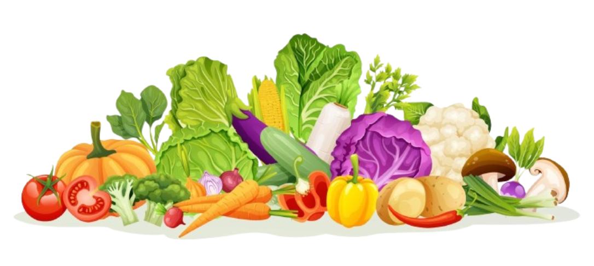

Carrot (n) = ការ៉ុត
Cabbage (n) = ក្តោប
Cauliflower (n) = ក្តោបផ្កា
Broccoli (n) = ប្រូកូលី
Spinach (n) = ម្ទេសបារាំង
Lettuce (n) = សាឡាត់
Tomato (n) = ប៉េងប៉ោះ
Cucumber (n) = ត្រសក់
Pumpkin (n) = ល្ពៅ
Potato (n) = ដំឡូង
Eggplant (n) = ត្រប់វែង
Onion (n) = ខ្ទឹមបារាំង
Garlic (n) = ខ្ទឹមស
Chili (n) = ម្ទេស
Bell pepper (n) = ម្ទេសប៊ិះ
Mushroom (n) = ផ្សិត
Green bean (n) = ប៉ែងវែង
Pea (n) = សណ្តែកបាយ
Soybean (n) = សណ្តែកសៀង
Corn (n) = ពោត
Ginger (n) = ខ្ញី
Lemongrass (n) = ស្លឹកគ្រៃ
Radish (n) = ឫសស្ពៃ
Turnip (n) = ដំឡូងស្ពៃ
Beetroot (n) = ប៊ីតរុត
Zucchini (n) = គូស៊ីនី
Celery (n) = សាឡិ
Morning glory (n) = ត្រកួន
Chives (n) = ខ្ទឹមក្ដោប
Okra (n) = ត្រប់
Squash (n) = ល្ពៅបារាំង
Gourd (n) = ល្ពៅស្រុក
Fennel (n) = សណ្តែកឈូក
Bok choy (n) = ស្ពៃបុកខូយ
Pumpkin leaf (n) = ស្លឹកល្ពៅ
Carrot : A long, orange root vegetable that is sweet and crunchy.
Cabbage : A round leafy vegetable, usually green or purple.
Cauliflower : A white vegetable that looks like a flower, related to cabbage.
Broccoli : green vegetable with a tree-like shape and many small florets.
Spinach : A green leafy vegetable that is soft and healthy.
Lettuce : A green leafy vegetable that is soft and healthy.
Tomato : A round red fruit eaten as a vegetable in cooking.
Cucumber : A long, green vegetable with watery flesh.
Pumpkin : A large round vegetable with orange flesh and seeds inside.
Potato : A starchy root vegetable, brown outside and white or yellow inside.
Sweet potato : A root vegetable that is sweet and orange or purple inside.
Onion : A round vegetable with many layers, strong flavor and smell.
Garlic : A small white bulb with strong smell, used to flavor food.
Chili : A small, spicy vegetable that makes food hot.
Bell pepper : A large, sweet pepper that can be red, yellow, or green.
Mushroom : A soft fungus vegetable that grows in the ground, often white or brown.
Green bean : A long, thin green vegetable eaten whole.
Pea : A small round green seed eaten as a vegetable.
Corn : A tall plant with yellow kernels that grow on a cob.
Ginger : A spicy, aromatic root used in cooking and medicine.
Lemongrass : A tall grass with lemon flavor, used in soups and curries.
Mustard green : A leafy green vegetable with a slightly spicy taste.
Water spinach : A green leafy vegetable that grows in water, common in Asian dishes.
Okra : A green pod vegetable, slimy when cooked, used in soups.
Squash : A family of vegetables like pumpkin and zucchini.
Gourd : A vegetable with a hard shell, many types eaten or used as containers.
Fennel : A vegetable with feathery leaves and a bulb that tastes like licorice.
